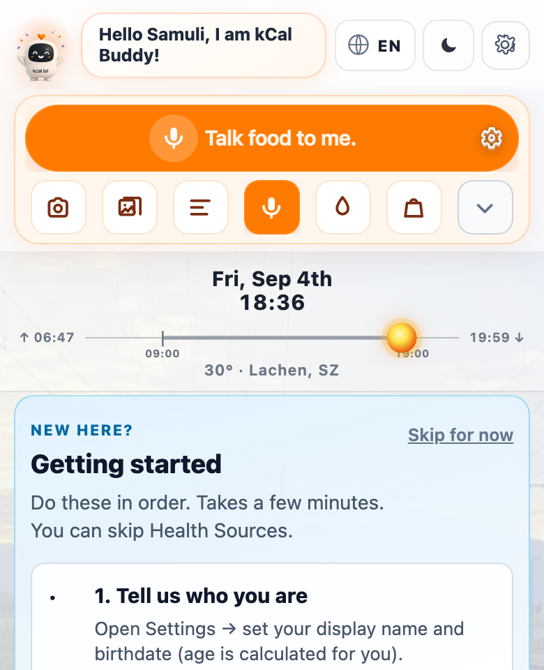

Buddy Academy
Daily Success
Daily success is a tiny ritual, not a heroic day. Morning glance, honest meals, evening skim — then stop obsessing.
Anchor logging to existing moments: after you sit down with the plate, not “when I remember tonight.”
Complete today’s loop: morning check → log each meal → evening Foodiary skim.
Why this matters
Motivation is unreliable. Rituals survive busy weeks. A daily loop keeps Foodiary complete enough for Progress to mean something, without turning health into a second job.
Most “failures” are missing capture, not missing willpower. When breakfast goes unlogged, lunch estimates drift, and dinner becomes guesswork at midnight. Capture close to the meal protects honesty.
Daily wins are boring on purpose: protein at one meal, water logged, Progress glanced. Boredom is a feature — it means the system is becoming automatic.
What to understand
A full successful day has five quiet beats.
- 1
Morning — open Home; notice budget / Progress; optional weigh-in and water
- 2
Breakfast — log with Buddy; favour a protein-forward start when possible
- 3
Lunch — log again; if rushed, voice or photo beats skipping
- 4
Dinner — log what you actually ate; correct grams later if needed
- 5
Evening review — two-minute Foodiary skim; fix blank-kcal rows; one sentence win
Truth: A logged imperfect day teaches Buddy. An unlogged “perfect” day teaches nothing.
Truth: Skim for missing meals and obvious errors. Deep analysis belongs to the weekly review.
How to do this in real life
Keep the same time windows so the brain stops negotiating.
- 1
Morning: 60 seconds on Home — weigh if that’s your habit, log water, note the day type (travel, training, rest)
- 2
Each meal: use the orange Log / Talk food control on Home — not Foodiary-first
- 3
Confirm Buddy’s estimate; adjust only when you know better
- 4
Evening: open Foodiary for today; fill gaps; avoid inventing precise grams you didn’t see
- 5
Write one daily win: “protein at lunch,” “walked,” “logged restaurant honestly”
Home is the daily desk. Quick actions (camera, mic, water) reduce friction. Today’s Progress fills when logs carry real nutrition — that’s your feedback loop.

home-quick-actions.pngMorning
Keep mornings light. The job is orientation, not optimisation. If weigh-ins stress you, weigh less often — consistency of method beats daily drama.
Meals
Breakfast, lunch, and dinner are equal citizens in the diary. Snacks count too. If you only log “clean” meals, Progress will lie optimistically.
When portions are unclear, a fair estimate logged now beats a perfect estimate never entered.
Evening review & daily wins
Ask: Did I capture the day? What one thing worked? What will I try tomorrow?
Then close the app. Sleep is recovery work — leave the spreadsheet brain at the door.
Common mistakes
-
“I’ll batch-log everything at 11pm from memory.”
Memory under-reports snacks and oils. Near-meal logging is more honest and less stressful.
-
“I only log on good days so my average looks clean.”
Selective logging invents a fictional person. Buddy coaches the real one.
-
“Daily success means crushing a huge deficit every day.”
Huge daily deficits often rebound. Daily success means ritual + protein/fibre awareness + sustainable energy.
If you logged the day and learned one small thing, you won. Repeat tomorrow — that is the whole game.
Open Home Invitation-only product.